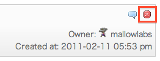
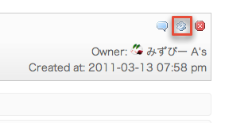
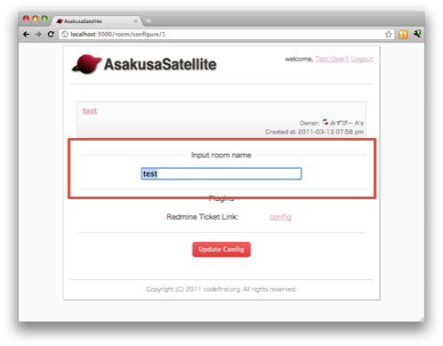
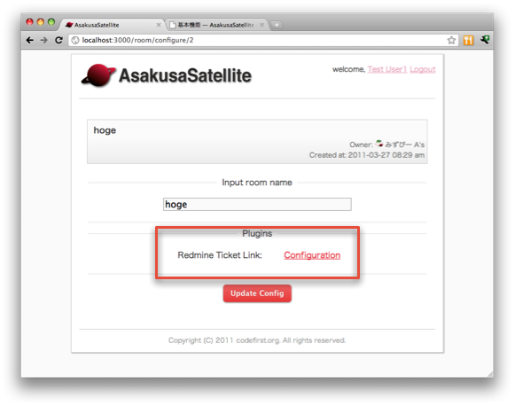
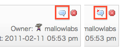
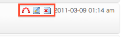
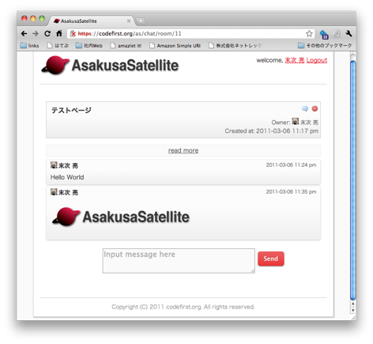
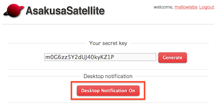

基本機能¶
部屋作成¶
- トップページで Create New Room ボタンをクリックします
- 部屋名を入力し、 Create ボタンをクリックします。
- 部屋が作成されます。
作成した部屋を削除するためには、部屋を表示し、 部屋名の右にある削除アイコンをクリックします。
部屋の設定変更¶
部屋の設定を変更するためには、部屋を表示し、 部屋名の右にある設定アイコンをクリックします。
設定を変更し、 Update Config ボタンをクリックします。
また画面の下半分はプラグインの設定画面へのリンクです。 configure リンクをクリックすることで、プラグインの設定ページに移動できます。
チャット¶
- トップページで部屋を選択します
- 一番下のテキストボックスに発言内容を記入し、 Send ボタンをクリックします。
- 発言内容が末尾に追加され、他の閲覧者に通知されます。
ブラウザがチャットサーバに正しく接続できているかは アイコンの表示で確認できます。 削除ボタンのアイコンに×マークが表示されている場合には 正しく接続できていないため、 インストールが正しく行われているかを確認してください。
マウスポインタを発言の上にかざすと その発言を編集するボタンが表示されます。
左から順に以下の意味を持っています。
- Redmine チケット作成ボタン(プラグイン)
- 発言編集ボタン
- 発言削除ボタン
自分以外のユーザのメッセージは編集と削除ができないため、 Redmine チケット作成ボタンのみが表示されます。
ファイルアップロード¶
- メッセージ領域にファイルをドラッグ＆ドロップします。
2. ファイルがアップロードされ、そのファイルへのリンクを表示します。 ドラッグしたファイルが画像の場合、その画像を表示します。
デスクトップ通知¶
閲覧中の部屋で自分以外のメッセージが投稿された場合に、 デスクトップに通知します。

デスクトップ通知を有効にするには、設定を行う必要があります。 画面右上のログインユーザのリンクをクリックし、個人設定画面を開きます。 Desktop Notification On をクリックし、 その後、 許可 をクリックしてください。
※ 現在のバージョンでは、一度許可した設定を取り消すことはできません。 ご注意ください。
全文検索¶
- トップページの検索ボックスに探したい単語を入力し、 Search ボタンをクリックします。
- 検索結果が表示されます。検索結果の近くの発言を閲覧する場合は日付をクリックします。
- 検索結果の前後の発言を表示します。